Research · 2021–2026
Light through matter: metal films, ultraviolet sources and nanostructures
Five years of photonics, told through the figures of two theses and four journal articles: how to make a metal film let light through, how to make tunable vacuum-ultraviolet light, how to use it to tell gas molecules apart, and how to design materials and nanostructures that could make it all smaller.
- 94%
- calculated transmission through a continuous 30 nm silver film, checked with two methods
- 120 nm
- shortest tunable vacuum-ultraviolet wavelength generated
- 0.5 ppm
- benzene picked out of a gas mixture
- ≈ 0.2 c
- energy velocity in ozone-grown TiO₂ films near 380–400 nm
Part I · MSc, 2021, recalculated in 2026
Light through metal
How a pattern of a semiconductor lets light pass through a continuous metal film.
1 Making a metal transparent
The questionCan a pattern on both sides of a continuous silver film, 30 nm thick, let light through it without cutting holes in the metal?
Touch screens and solar cells need electrodes that conduct electricity and let light through. Metals conduct well, but a silver film only 30 nm thick still reflects almost all near-infrared light: about 2% gets through (Figure 1a).
The idea of the thesis was to place lines of a transition metal dichalcogenide (TMDC) such as MoS₂, a layered semiconductor with a very high refractive index, above and below the metal. The lines couple the incoming light to surface plasmons, oscillations of the electrons at the two faces of the metal, which carry the light across the film (Figure 1b).1
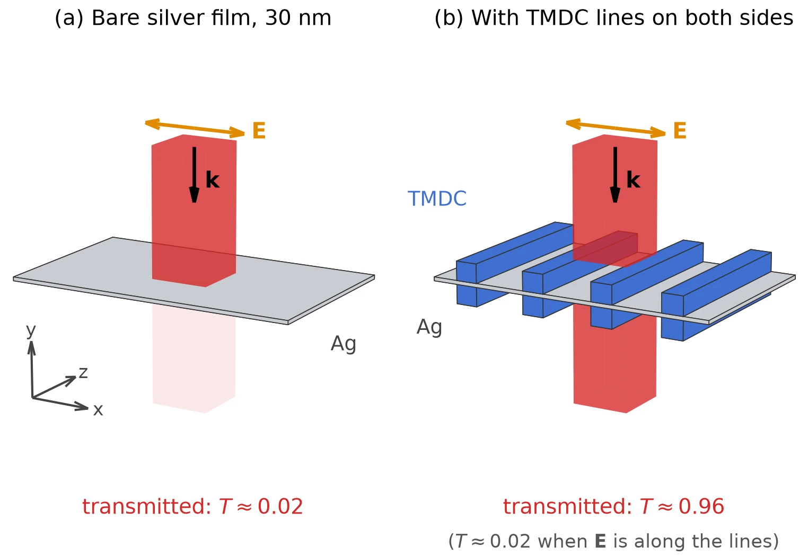
Checking the result with free tools
The 2021 simulations used the commercial solver Lumerical. In 2026 I recalculated the main designs with two free methods that work in different ways: the FDTD solver Meep, which steps the fields forward in time on a grid, and rigorous coupled-wave analysis (RCWA), which has no spatial grid at all. I drew the geometry with gdsfactory, the layout library that Studio writes code for, and took every optical constant from public tables.
With MoS₂ lines, 94% of the light passes through the silver in Meep and 96% in RCWA, near 1050 nm. The bare film lets through 2% at that wavelength, so the lines raise the transmission about 45 times (Figure 2). The 2021 thesis reported up to 90%.1 The structure also sorts polarisation: with the field across the lines it passes light near 1050 nm, and with the field along the lines it passes light near 880 nm and blocks 1050 nm. That makes it a polariser for the near infrared.
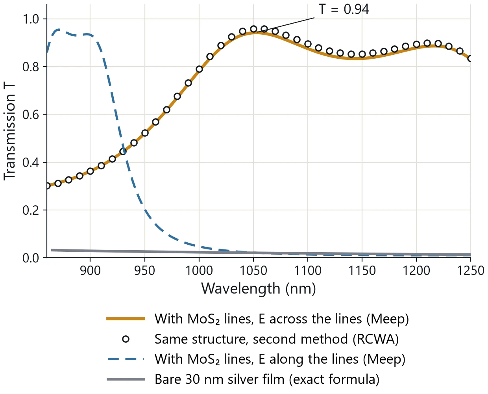
Why it works
The field maps show what carries the light (Figure 3). At the transmission maxima the field is strongest on the silver surface at the edges of the lines, five to six times the incident field. The component normal to the film has the same sign on both faces at one maximum and opposite signs at the other. These are the two coupled surface plasmons of a thin metal film, the same pair the thesis identified in 2021 at about 960 and 1100 nm.1
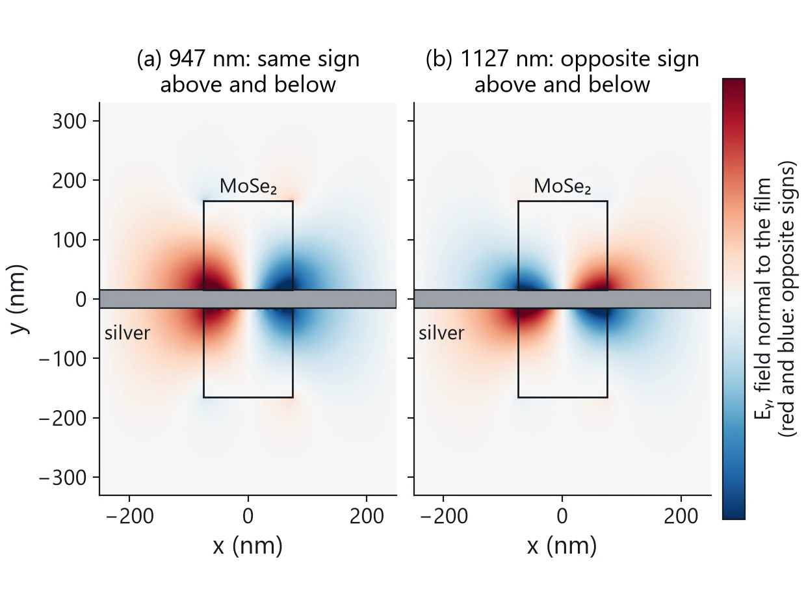
From the simulation to the laboratory
The experimental part started from MoS₂ flakes exfoliated with adhesive tape and stacked as MoS₂–gold–MoS₂ around a 30 nm gold film. Under the microscope, flakes of different thickness show different colours (Figure 4c). Measured through two such samples, the stack transmitted up to about 1.5 to 1.6 times as much light as the bare gold, at near-infrared wavelengths. To pattern the flakes without a cleanroom, I cut gratings directly into them by laser ablation: lines 0.4 µm wide, 2.16 µm apart (Figures 4a and 4b).1
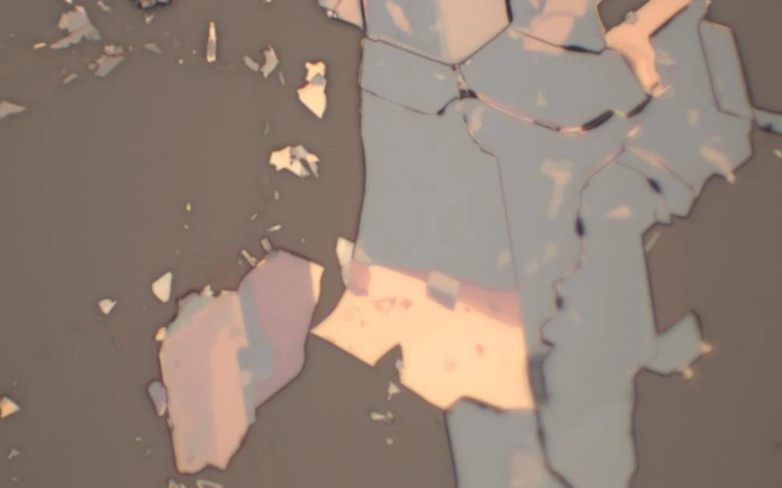
In shortLines of MoS₂ on both sides let about 94% of near-infrared light through 30 nm of silver, some 45 times more than the bare film, and two independent free methods agree. The first samples measured in 2021 showed a smaller gain, 1.5 to 1.6 times. Possible uses: transparent electrodes for solar cells, plasmonic colour filters, polarisers, and cavities that make photodetectors more efficient.1
Part II · PhD, 2023–2026
Tunable ultraviolet light
A light source whose ultraviolet colour can be tuned, and how it tells gas molecules apart.
2 The problem the PhD set out to solve
The questionCan a portable detector say which gas molecules are in the air, and not only how many?
Indoor air carries volatile organic compounds (VOCs) from paints, cleaning products and fuels. Some, like benzene, are regulated at concentrations below one part per million. The standard portable detector, a photoionization detector, uses an ultraviolet lamp to knock an electron off each gas molecule and counts the resulting current. But the lamp emits at a fixed photon energy, so every molecule that can be ionised at that energy adds to the same signal. The detector tells you how much, not what.2
Each molecule needs a different minimum photon energy to be ionised, its ionisation potential. Most VOCs lie between about 7.75 and 11.8 eV, which corresponds to vacuum-ultraviolet (VUV) light of about 160 to 105 nm. A VUV source whose wavelength can be tuned across those thresholds would let a detector tell molecules apart.2
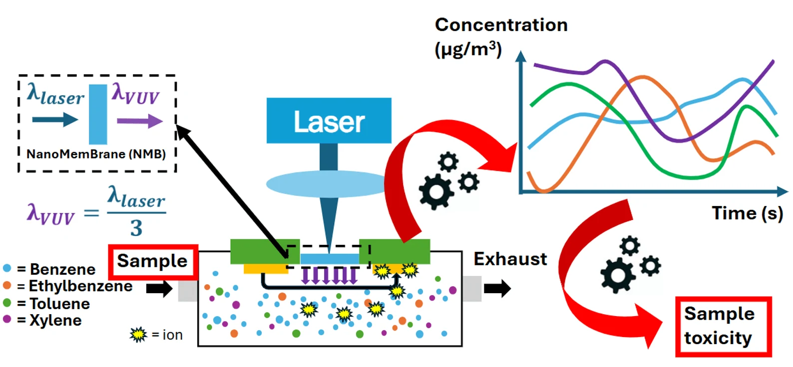
In shortA lamp-based detector measures the total of all ionisable gases. A light source whose photon energy can be tuned across the ionisation thresholds, about 105 to 160 nm, could tell the molecules apart.
3 Making tunable vacuum-ultraviolet light
The questionHow do you make vacuum-ultraviolet light whose wavelength you can choose?
Vacuum-ultraviolet light is absorbed by air and by most optical materials, which is why it is hard to make and to handle. The approach here was nonlinear optics. A femtosecond laser drives an optical parametric amplifier, which produces a tunable wavelength. A crystal of β-barium borate doubles its frequency into the near ultraviolet. Finally a suspended SiO₂ membrane only 600 nm thick triples it, by third-harmonic generation, into the VUV (Figure 6). The membrane is thin enough that phase matching, the main limit of bulk crystals, matters much less.2,3
The source is tunable across 120–180 nm, with generation shown at 130 nm and at 120 nm. Coupled to a custom detector, it ionised ethanolamine and eucalyptol, and the signal grew linearly with the ethanolamine concentration.3 My part of this work was the gas-handling system, the low-noise current amplifier and the data-acquisition software, together with simulations of the third-harmonic generation and the measurements.2
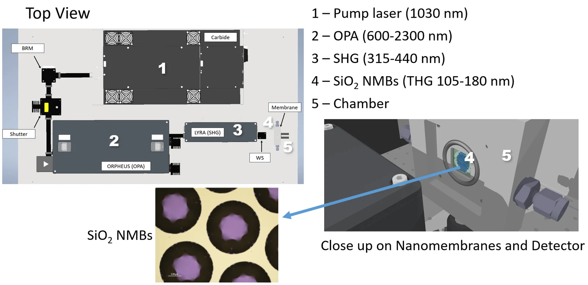
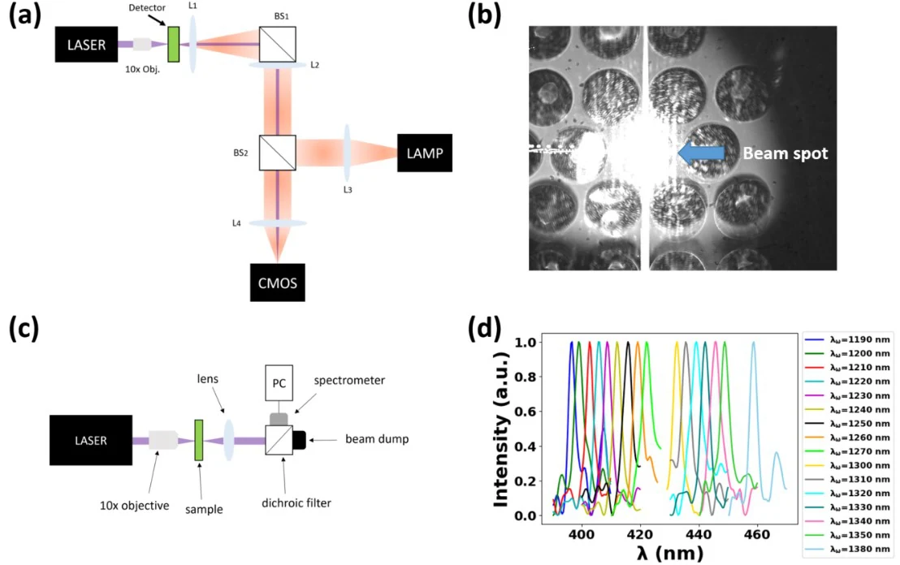
In shortThird-harmonic generation in a 600 nm SiO₂ membrane gave vacuum-ultraviolet light tunable across 120–180 nm, and that light ionised test gases.3
4 Telling molecules apart
The questionCan the tunable source name the molecules in a mixture?
With a tunable source, the detector can do something a lamp cannot. As the photon energy is raised step by step, the current jumps each time it crosses the ionisation potential of a compound present in the gas. The size of each jump is proportional to that compound’s concentration, weighted by how easily it ionises. Taking the derivative of the current turns the steps into peaks, one per molecule: a spectrum of the mixture. The method is called sample ionization potential spectroscopy (SIPS).4
Applied to a certified mixture of benzene, toluene, ethylbenzene and xylenes (BTEX), it separated the individual compounds at the concentrations of occupational exposure limits: 0.5 ppm benzene, 50 ppm toluene, 20 ppm ethylbenzene and 50 ppm of each xylene (Figure 8).2,4 The experiments and measurements were carried out by my co-authors. My contribution was the earlier lamp-based photoionization detector project that this set-up grew from, the research discussion, and writing and editing the manuscript.2
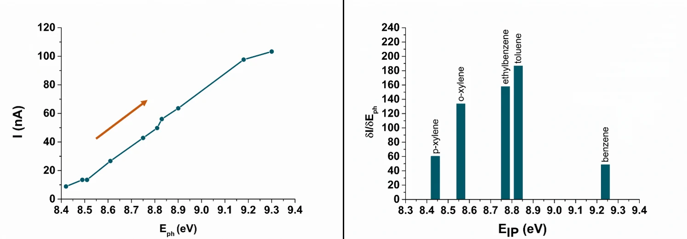
In shortYes. Stepping the photon energy separated benzene, toluene, ethylbenzene and xylenes in one mixture, at occupational exposure limits and down to 0.5 ppm of benzene.4
Part III · PhD, 2024–2026
Slowing down light in thin films and nanostructures
Thin films and nanostructures that could make the ultraviolet source stronger and smaller.
5 A better material: TiO₂ films and slow light
The questionWhich material and which film make the third harmonic stronger, and can you tell before you build it?
Third-harmonic generation is weak, so the next question was how to make it stronger. One route is a material with a larger nonlinear response in a geometry that holds the light longer. TiO₂ has a high refractive index and low absorption in the near ultraviolet. It can be grown atomic layer by atomic layer by atomic layer deposition (ALD), which controls thickness to a fraction of a nanometre. Growing it with different oxidants (water, hydrogen peroxide, ozone) gave films with different structure, defects and optical constants (Figure 9).2,5
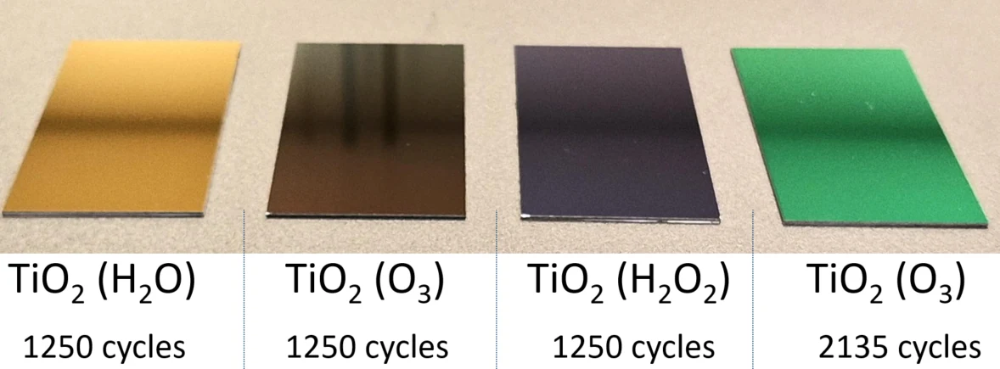
To compare films before measuring them, I needed a number that says how long light lingers in a material. The usual choice, the group velocity, can give nonsense, even faster than light, near an absorption edge. The energy velocity ve = ⟨S⟩/⟨u⟩, the energy flow divided by the stored energy, stays physical. It follows directly from the measured n(λ) and k(λ). In ozone-grown films it fell to about 0.18–0.21 of the speed of light near 380–400 nm, confirmed by ellipsometry and simulation (Figure 10).5
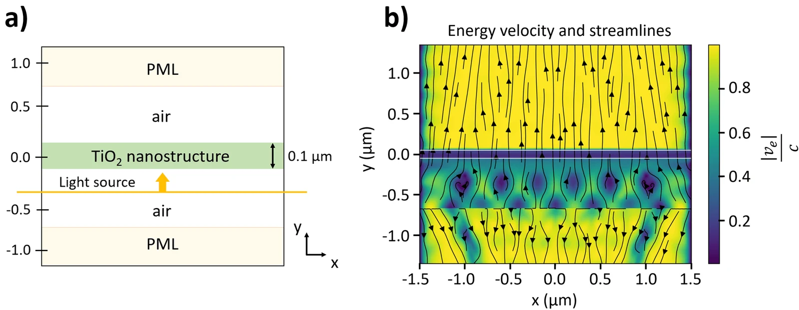
The third-harmonic measurements followed the material chemistry. The hydrogen-peroxide film gave the strongest signal at 400 nm, while the thicker ozone film was strongest at 380 nm (Figure 11). Because the energy velocity comes straight from ellipsometry data, it costs almost nothing to calculate and can screen film thickness, oxidant and wavelength before anything is fabricated.5
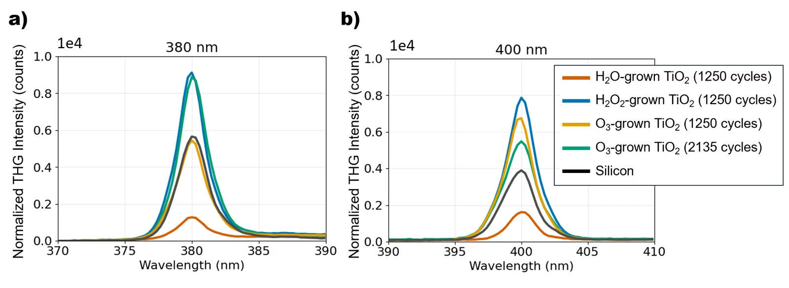
In shortIn ozone-grown TiO₂ the energy velocity falls to about 0.2 c near 380–400 nm. It is calculated from ellipsometry alone, so it can help choose a film before anything is fabricated.5
6 Nanostructures that hold the light: anapoles
The questionCan a particle smaller than the wavelength hold ultraviolet light inside it?
The second route to stronger third-harmonic generation is to concentrate the light inside nanostructures. In simulations, TiO₂ nano-rectangles 190 × 160 × 100 nm support an anapole near 366 nm, a state in which the particle scatters very little while the field inside is strong. Arranged in a metasurface on a thin silica membrane, the effect appears at 370 nm.6 The full story, with figures and two interactive explanations, is on its own page.
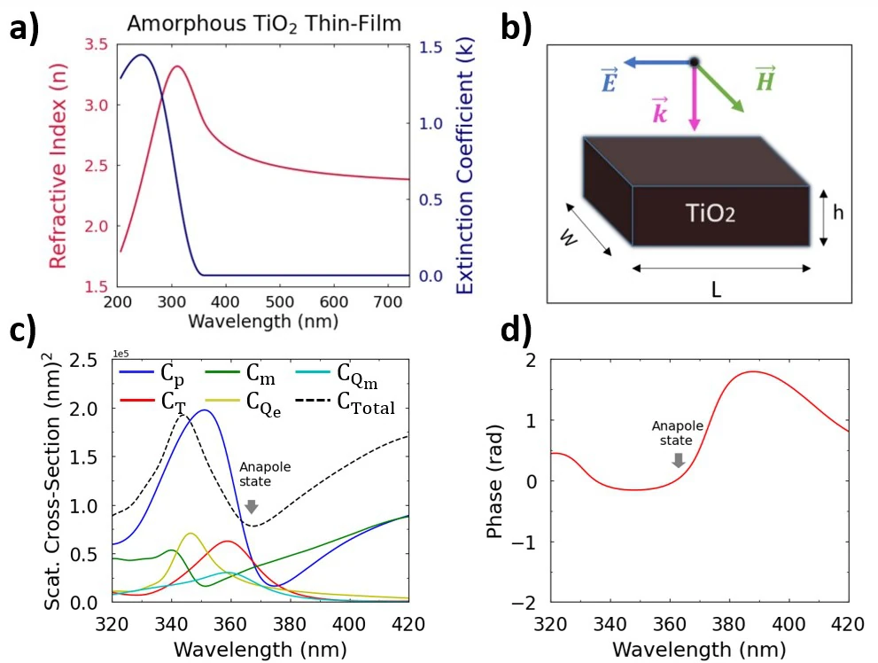
7 Where this could be used
The questionWhere could each result be used, and how far has it gone?
Each application below is labelled with how far the work has gone.
- Shown in the labSelective air-quality monitoring. Telling benzene from toluene and xylenes in real time, at occupational exposure limits, for workplaces and indoor air.4
- Shown in the labTunable VUV light from a thin membrane. A source tunable across 120–180 nm without a gas cell or a bulk crystal at the last stage.3
- Method proposedScreening thin films before fabrication. Using the energy velocity, calculated from ellipsometry data, to choose film thickness and growth chemistry for ultraviolet nonlinear optics.5
- SimulatedUltraviolet metasurfaces. Anapole metasurfaces in TiO₂ as compact elements for third-harmonic generation; fabrication is future work.6
- Simulated, partly measuredTransparent metal electrodes, filters and polarisers. TMDC-patterned metal films for solar cells and photodetectors.1
In shortThe long-term goal joins these threads: a compact, tunable ultraviolet gas sensor that names the molecules it detects.2
Publications
Download BibTeX · Google Scholar
Journal articles
- 2026Energy velocity as an optical design indicator for the ultraviolet nonlinear response of ALD-grown TiO₂ thin filmsD. Poeta, C. Maibohm, C. Calaza, A. Miranda, M. López-García, et al. · Optical Materials Express 16(10), 3342–3356 · first author
- 2026Real-time molecular specific BTEX detection at TLV-TWA concentration levelsR. Vilarinho, H. Mahmoodnia, C. Maibohm, D. Poeta, et al. · Environmental Technology & Innovation 42, 104895 · co-author
- 2025Volatile organic compound photoionization utilizing tunable quasi-monochromatic vacuum ultraviolet down to 120 nm obtained by third harmonic generation from a suspended dielectric nanomembraneR. Vilarinho, H. Mahmoodnia, C. Maibohm, D. Poeta, et al. · Optics Express 33(12), 26342–26355 · co-author
- 2024Optical anapoles excited by UV-A illuminationD. Poeta, R. Vilarinho, M. López-García and P. A. A. De Beule · Optics Letters 49(24), 7198–7201 · first author
Theses
- 2026Tunable VUV photoionization and slow-light enhanced third-harmonic generation in TiO₂ for selective VOC sensingPhD thesis, Bielefeld University · supervisors T. Huser and P. A. A. De Beule
Research carried out within EU Horizon Europe · LEARN · Grant agreement 101057510 - 2021Extraordinary transparency in continuous metallic thin filmsPDF · MSc thesis, University of Minho · supervisors J. L. Garcia-Pomar and J. P. Alpuim
Funding acknowledged in the thesis: EU Horizon 2020 Marie Skłodowska-Curie Actions · 2D_PHOT · Grant agreement 840064
Conference contributions
- 2025TiO₂/SiO₂ metasurfaces for the enhancement of THG with pump wavelengths in the UV-AD. Poeta, R. Vilarinho, H. Mahmoodnia and C. Calaza · SPIE Metamaterials XV
- 2021Extraordinary transparency in continuous metallic thin film based on transition metal dichalcogenides metasurfacesD. Poeta, P. Alpuim and J. L. Garcia-Pomar · Spanish Conference on Nanophotonics, abstract
Simulation data you can inspect
Two interactive views for readers who want the numbers behind the anapole study. The first is an independent re-calculation made for this site with the free solver Meep: the electric and magnetic fields in the TiO₂ nano-rectangle over one optical cycle. The second plots the published times at which the electric and magnetic fields peak while the anapole forms.6 For the physics, start with the anapole page.
3D Meep reference: 190 × 160 × 100 nm TiO₂ in air at 366.5 nm. The central x–y plane shows one steady-state optical cycle on fixed E/H scales.
Optical constants: Jolivet et al. (2023), amorphous ALD TiO₂ deposited at 200 °C: n = 2.8081, κ = 0 at 366.5 nm, from refractiveindex.info.
Calculation, data and scope
The tabulated optical constants are linearly interpolated in wavelength without extrapolation. This calculation holds ε = n² as a real constant at the selected frequency; it does not model broadband dispersion or the paper’s transient formation. Both E and H use the same reconstructed optical phase. The mesh is 6.67 nm at z = 0, with separate fixed display scales. The field map alone does not establish an anapole condition.
Numerical methods ↗Convergence checks ↗Meep source ↗Complex-field data ↗Optical-constant table ↗Anapole formation: electric and magnetic timing
Published electric and magnetic samples at distinct times.
Scroll the timeline horizontally to inspect the time spacing ↔
Instance 1 · sample 1 · pair 1 / 14
Fourteen published pairs across four instances, with E/H offsets of 0.26–0.32 fs. The cursor scans reported events; it does not reconstruct the fields above.
Timing data and source
Data: D. Poeta, R. Vilarinho, M. López-García and P. A. A. De Beule, Optical anapoles excited by UV-A illumination, Optics Letters 49(24), 7198–7201 (2024), article DOI ↗; Supplement 1, Fig. S2, version 5 ↗, CC BY 4.0 ↗. Code, data and methods ↗.
Open data: all fourteen reported time pairs
| Instance / sample | tE (fs) | tH (fs) | Δt (fs) | |E|² / |E₀|² |
|---|
References
- D. Poeta, Extraordinary transparency in continuous metallic thin films, MSc thesis, University of Minho (2021). Zenodo record · PDF. Licensed CC BY-NC-ND 4.0.
- D. Poeta, Tunable VUV photoionization and slow-light enhanced third-harmonic generation in TiO₂ for selective VOC sensing, PhD thesis, Bielefeld University (2026). doi:10.4119/unibi/3020621. Licensed CC BY 4.0.
- R. Vilarinho et al., “Volatile organic compound photoionization utilizing tunable quasi-monochromatic vacuum ultraviolet down to 120 nm obtained by third harmonic generation from a suspended dielectric nanomembrane,” Optics Express 33, 26342–26355 (2025). doi:10.1364/OE.564577
- R. Vilarinho et al., “Real-time molecular specific BTEX detection at TLV-TWA concentration levels,” Environmental Technology & Innovation 42, 104895 (2026). doi:10.1016/j.eti.2026.104895
- D. Poeta et al., “Energy velocity as an optical design indicator for the ultraviolet nonlinear response of ALD-grown TiO₂ thin films,” Optical Materials Express 16, 3342–3356 (2026). doi:10.1364/OME.611814
- D. Poeta, R. Vilarinho, M. López-García and P. A. A. De Beule, “Optical anapoles excited by UV-A illumination,” Optics Letters 49, 7198–7201 (2024). doi:10.1364/OL.536925
Figures 1–3 were made for this site from my 2026 recalculation of the MSc designs with Meep and RCWA. The source images for Figure 4 are from the MSc thesis (Ref. 1, CC BY-NC-ND 4.0); the website adds panel labels. Figures 5–12 are from the PhD thesis (Ref. 2, CC BY 4.0). Where a figure was first published in a journal, the article is cited in the caption. Refs. 3, 5 and 6 are open access under the Optica Open Access Publishing Agreement, and Ref. 4 under CC BY-NC-ND 4.0.